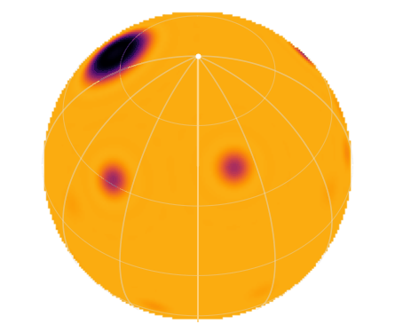
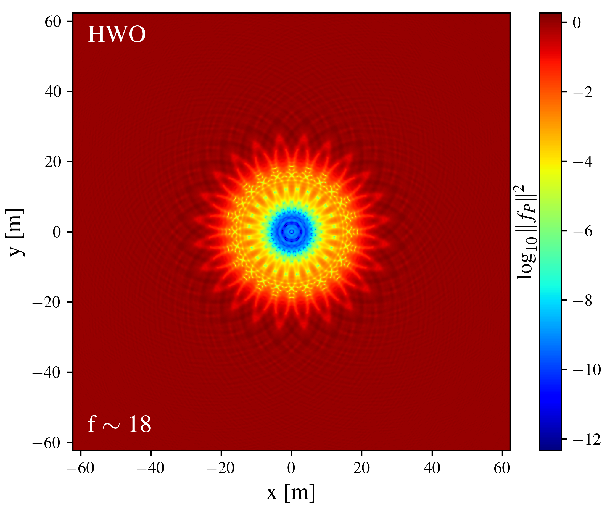
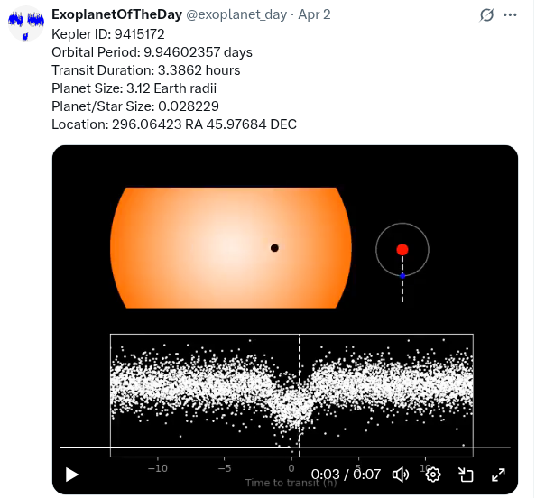
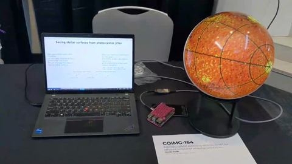
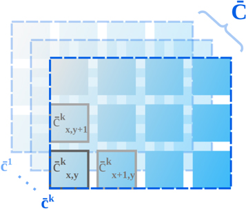
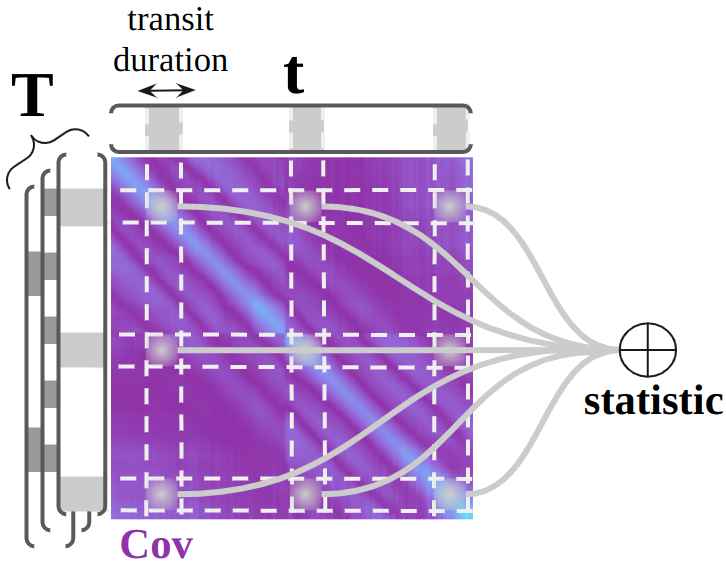

Publications
- 2026 Taaki, Corrales, Hero. Using Astrometry to Break Degeneracies in Stellar Surface Mapping. The Astrophysical Journal. Link
- 2026 Taaki, Corrales, Hero. Identifiability of Rotating Stellar Surfaces From Astrometric Jitter. ICASSP 2026. arXiv:2511.07706
- 2025 Taaki, Kamalabadi, Kemball, Corrales, Hero. Efficient Exoplanet Imaging Simulations of the Habitable Worlds Observatory. The Astronomical Journal. Link
- 2025 Taaki, Kemball, Kamalabadi. PyStarshade: Simulating High-Contrast Imaging of Exoplanets with Starshades. Journal of Open Source Software. Link
- 2025 Taaki, Kemball, Kamalabadi. A Search for Exoplanet Candidates in TESS 2-minute Light Curves Using Joint Bayesian Detection. The Astronomical Journal. Link
- 2024 Taaki, Kemball, Kamalabadi. Robust Detrending of Spatially Correlated Systematics in Kepler Light Curves Using Low-Rank Methods. The Astronomical Journal. Link
- 2020 Taaki, Kamalabadi, Kemball. Bayesian Methods for Joint Exoplanet Transit Detection and Systematic Noise Characterisation. The Astronomical Journal. Link
Projects / Software





TESS250k node-hours
Blue Waters
Blue Waters
TESS Joint Bayesian Transit Search
A joint transit search of TESS 2-minute light curves, run on Blue Waters.
Other
Contact
Email: xiaziyna@gmail.com · jtaaki@stsci.edu